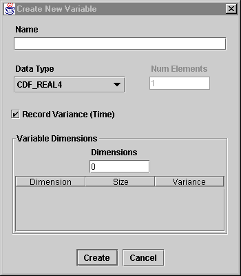
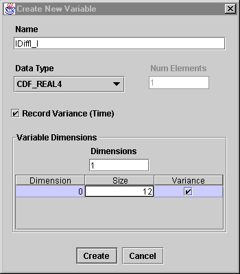
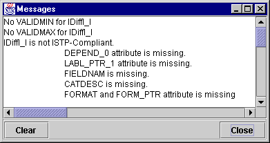
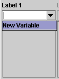
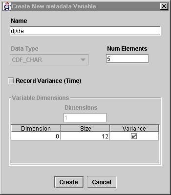
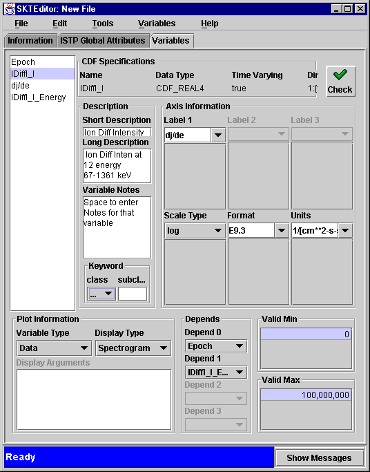
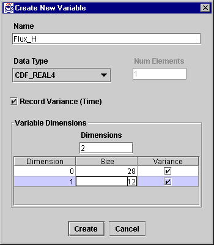
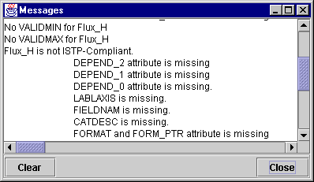
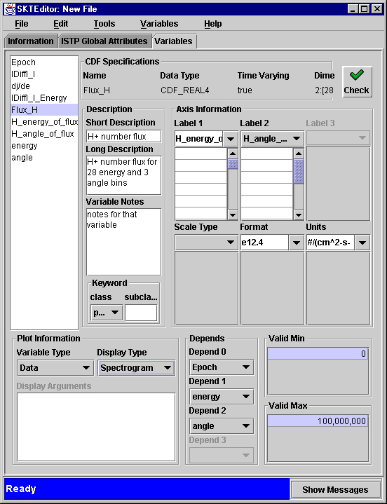
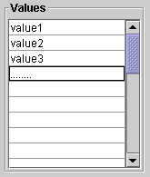

1. Click on New under the Variables menu to open the Create New Variable window.

This is the default window. Let us create, the Ion Differential Intensity variable, a 1D flux data variable.
2.Enter the following variable configuration, and click on Create:

IDiffI-I is now added to the variable list for this CDF. However, as reported in the message area, required attributes need to be entered in the variable panel.

Note that the Label attribute missing is reported as LABL_PTR_1. This indicate that the label is in fact itself a metadata variable.
3. Create a metadata variable as a value for the Label attribute by selecting New Variable under the label 1 pull down menu

A New Metadata Variable is now displayed.
4.Enter the name of your label variable and change the number of characters to match the size of the name, accept the rest of the default values and click on Create

The Label1 pointer variable has been created and is
now part of the CDF file.
5.Continue filling in the rest of the required attributes

Note that due to the display type of Spectogram, the dependencies comprises two variables. Depends0 is Epoch, but Depends1 required the creation of yet another support variable IDiffI_I_Energy which was generated by repeating almost exactly the steps taken to create dj/de.
You have added a 1-dimensional variable to your CDF file, and a dependent metadata variable. Let us now look at a final example, in which we create a 2-Dimensional variable.
1.Open the New Variable window and fill in the necessary attributes and click on Create

The H+ number flux variable has been added to your file. Checking for compliance shows that the following required attributes are still missing:

3. Create the needed metadata and support data variables as well as the rest of the attributes as guided by the SKTEditor GUI.

Note that GUI allowed the creation of two Label variables H_energy_of_flux and H_angle_of_flux, and the definition of 3 depends variable Epoch, energy and angle. Energy and angle are support variables that needed to be created using the create support window GUI.
You can enter values for H_energy_of_flux and the H_angle_of_flux metadata variables directly in this display or click on the referred variables in the variable list and use the Value field:

the Energy and angle variables defined as Depends support variables will need to be selected and given Label1 and Format attributes to make them ISTP compliant as well.